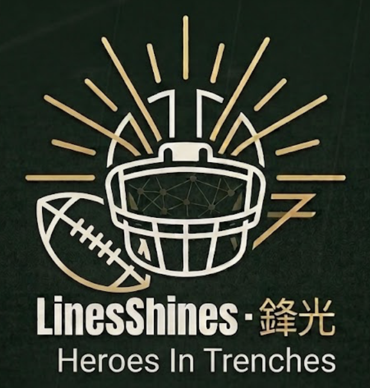

🏎Get-off in a second…
No players clear this threshold yet — try lowering the minimum.
Source: PFF Premium Stats. Data is never published. Median lines are calculated according to current filter.

🏈NFL OL & DL Interactive Platform
No players clear this threshold yet — try lowering the minimum.
Source: PFF Premium Stats. Data is never published. Median lines are calculated according to current filter.